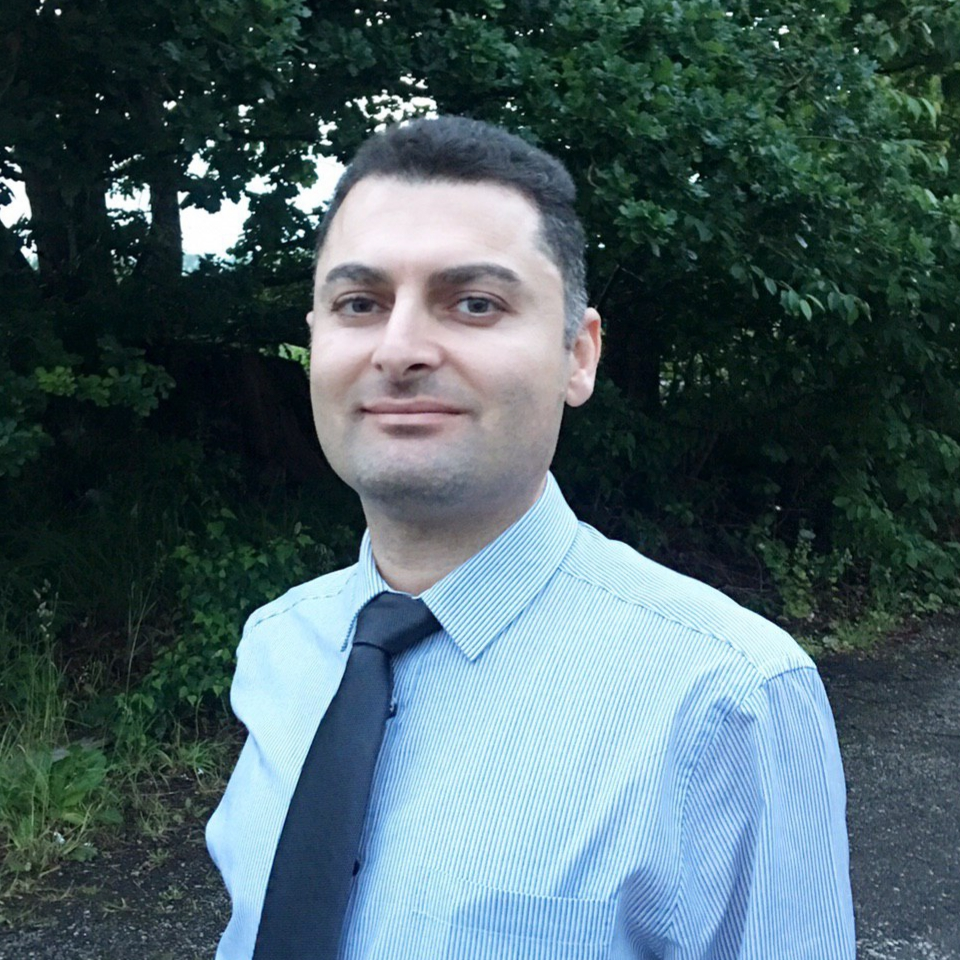
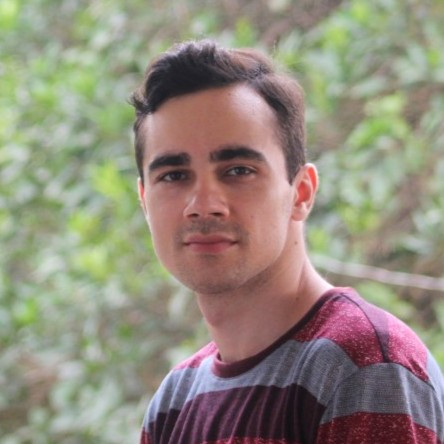
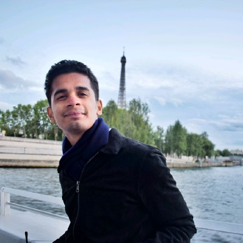
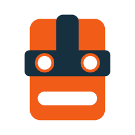
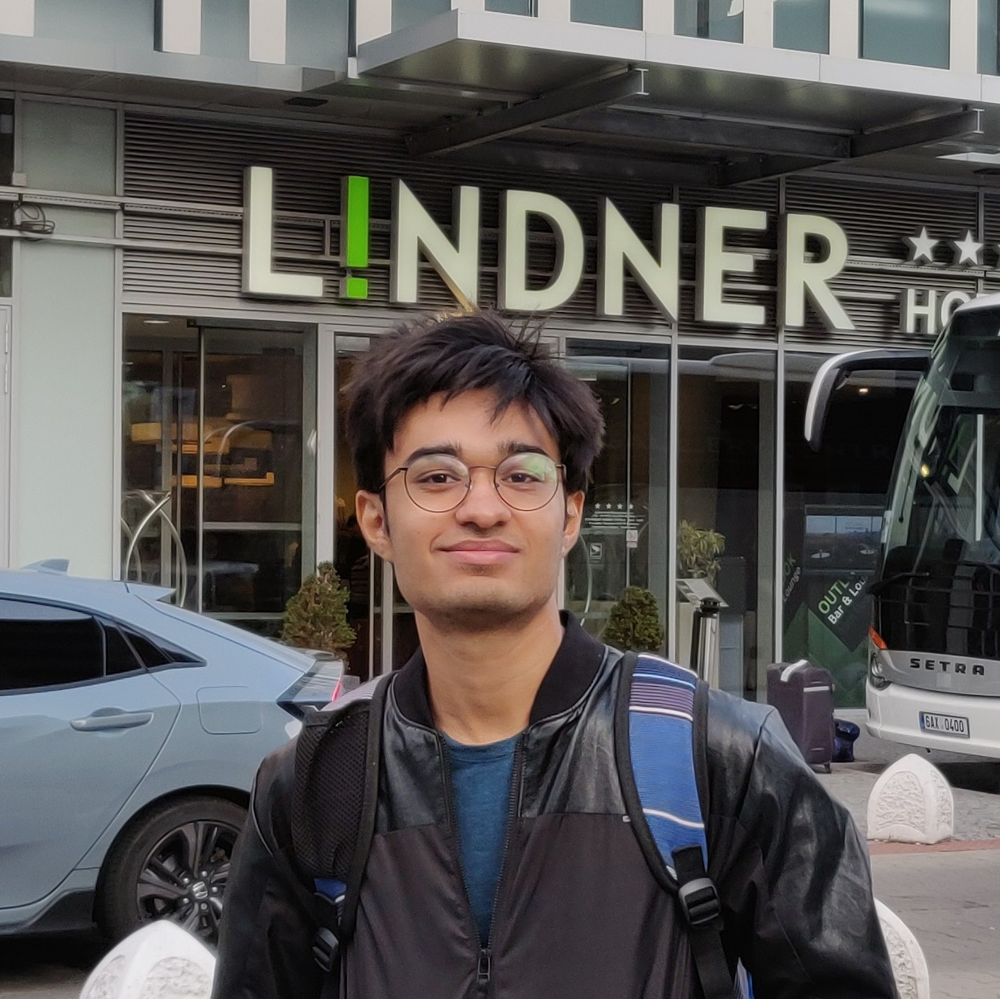

Head of IML

updated: 09.08.2020
Research interests: robotic grasping, manipulation, Deep imitation learning, tele-manipulation, Haptics, Robot Learning from Demosntrations.
Need to meet me: please propose a meeting time via
|
Postdocs
Active in lab management and supervising mentoring PhDs and Interns

06.2019-06.2021
Before joining IML: PhD, University of Pisa, Italy
Contributing to Projects: GRaspberry--2019-2021
Research interests: motion planning, grasping and manipulation, control systems, learning, variable stiffness parallel mechanisms
|

02.2020-02.2021
Before joining IML: PhD, University of Birmingham, UK
Contributing to Projects: Robofruit--2020-2021 & CELLO--2020-2021
Research interests: robotic grasping, manipulation, haptics, Genetic algorithm.
|

08.2020-10.2021
Before joining IML: PhD, dge Hill University, UK
Contributing to Projects: Robofruit--2020-2021
Research interests: Fruit Perception, strawberry weight, ripeness estimation, and localisation.
|
|
08.2020-8.2022
Before joining IML: PhD, King's College London, UK
Contributing to Projects: Lincoln Agri-Robotics (LAR)--2020-2022
Research interests: Motion Planning for fruit picking, Probabilistic Movement Primitives, Trajectory Optimisation.
|
PhDs

01.2018~01.2021
Before joining IML: M.Sc. at University of Pisa, Italy.
Research interests:: Force control, robotic grasping, robotic cutting, motion planning.
|

2.2020~08-2023
Before joining IML: M.Sc. at Sharif University, Iran
Research interests:: robotic grasping, manipulation, teleoperation, Tactile sensing, Deep learning.
|
02.2020~09.2023
Before joining IML: --
Research interests:
Motion control, deep MPC, robotic manipulation.
|
|

02.2020~09.2023
Before joining IML: University of Glasgow-- Master of Science - MS Field Of StudyMechatronics, Robotics, and Automation Engineering
Research interests:
Space robotic manipulation.
|
Postgrad and Intern researchers at IML
|

08.2020-02.2021
Before IML: M.Sc. student at Politecnico di Milano, Italy
Research interests:
robotic grasping, manipulation, deep NN.
|
09.2019-08.2020
Position: Final Year Project student at Univeristy of Lincoln, UK.
After IML: . . .
Research interests:
Natural Language Processing.
|
09.2019-08.2020
Position: Final Year Project student at Univeristy of Lincoln, UK.
Research interests:
After IML: . . .
Deep grasp synthesiser, Point Cloud Segmentation.
|
|
03.2020~08-2020
Position: M.Sc. project, Univeristy of Lincoln, UK.
After IML: PhD at University of Cambridge, UK.
Research interests:
robotic grasping, manipulation, tactile sensing, slippage detection.
|

06.2020-12.2021
Before IML:
Research interests:
robotic grasping, manipulation, NLP.
|
09.2020-03.2021
Before IML: AI & Robotics postgraduate studentSapienza University of Rome
Research interests:
Deep NN, transfer learning, tactile sensing.
|
|
08.2020-02.2021
Before IML:
Research interests:
Networking.
|
08.2020-02.2021
Before IML:
Research interests:
robotic grasping, manipulation, NLP.
|
|
Past IML members:

PhD: 10-2015~10-2018
Position after PhD: postdoc at University of Surrey
Research interests:
robotic grasping, manipulation, tele-manipulation, haptics, legged robots.
|
06.2019~08-2020
Position after IML: PhD student at Lehigh University, USA (start: 09.2020)
Research interests:
robotic grasping, manipulation, tele-manipulation, haptics, legged robots.
|